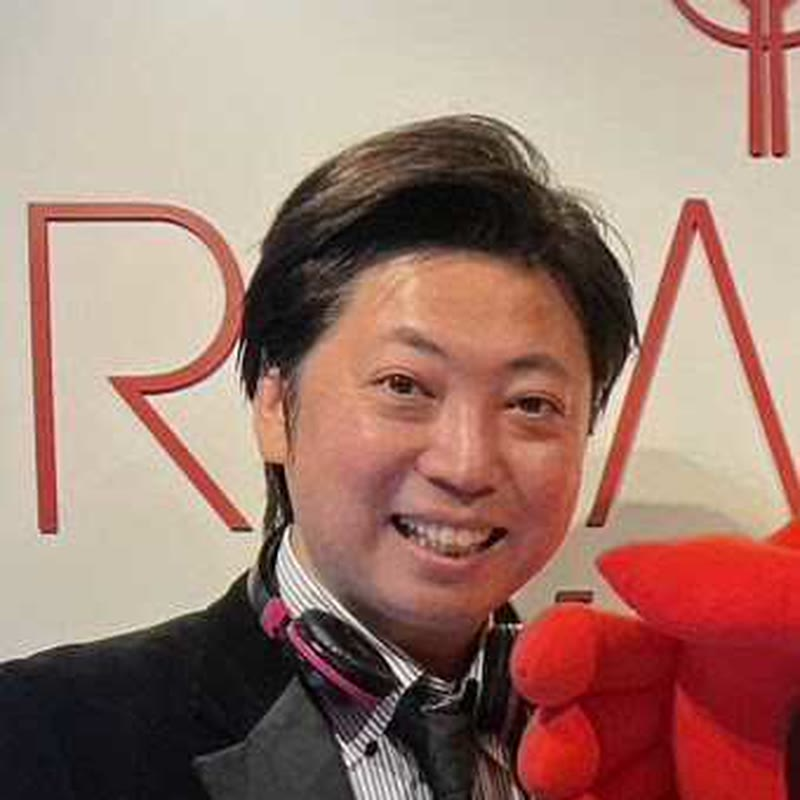
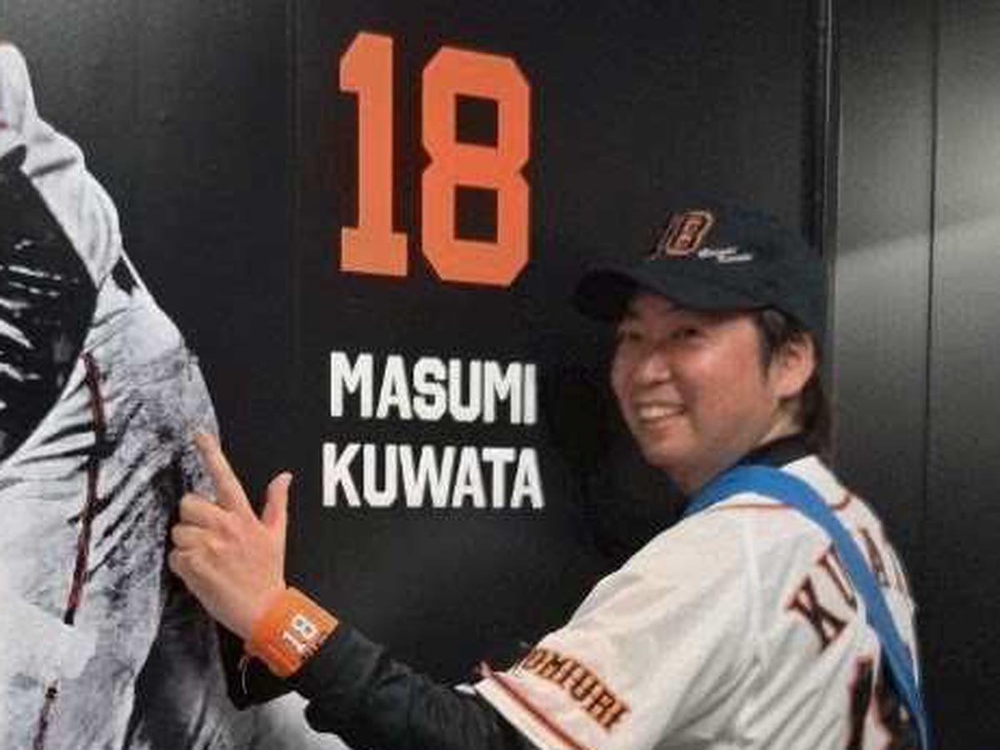
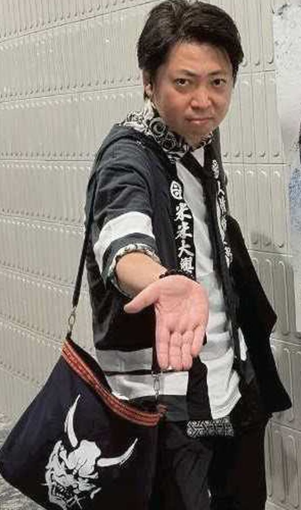

株式会社ライトアップ 経営コンサルチーム
docomo担当

SWEETS × SALES
MOTOMURA FUTOSHI
お客様に寄り添って、
幸せを運びたいんです。
MY MISSION
鹿児島県鹿児島市の生まれです。高校では野球部でした。最後の夏、県予選の決勝戦で敗れて、甲子園には行けませんでした。あのときは泣きました。ポジションは三塁コーチャーで、プレイングマネージャーも兼ねています。自分が打つより、走者をどう還すかを考えている時間のほうが長い高校生でした。
そのあとは菓子メーカーで約20年です。羽田空港や東京駅で、スイーツとおみやげの「東京ばな奈」ブランドの店長をしていました。ここでもプレイングマネージャーです。旅立つ人と、帰ってくる人。どちらもお土産を選ぶ理由が違います。その違いを毎日見ていました。
いまはライトアップの経営コンサルチームで、青山オフィスにてdocomoを担当しています。売るものは変わりましたが、お客様の前に立つ仕事だという点は変わっていません。
得意は、笑顔でアナウンスすることです。20年やってきて残ったのが結局それでした。お客様に寄り添って、幸せを運んで、喜んでいただく。そのために声を出しています。

高校の最後の夏は、県予選の決勝で負けました。甲子園には届きませんでしたが、あのときのベンチのことはいまでも覚えています。好きな選手は巨人の桑田真澄さんです。
野球の話は、どこからでも入れます。スイーツとおみやげの売り場に、20年立っていました。旅立つ人が選ぶものと、帰ってくる人が選ぶものは違います。その違いを見続けた20年でした。

90年代のJPOPを歌います。好きなアーティストは米米CLUBです。会場に足を運ぶときは、この格好で行きます。
妻と、中学1年生の長男がいます。息子とは野球の話ができる年齢になってきました。
商談で間が空いたときは、このあたりを振ってください。だいたい話が伸びます。
売り場で20年、お客様の前に立ってきました。商品は変わりましたが、目の前の人に合わせて言い方を変える仕事だという点は変わっていません。
羽田空港と東京駅の売り場で20年です。旅立つ人と帰ってくる人では、同じ商品でも刺さる言い方が違います。相手を見てから言葉を選ぶ癖は、そこでついています。
得意はこれです。伝える内容が同じでも、誰がどんな顔で言うかで受け取られ方が変わる。売り場ではそれがそのまま数字になりました。
高校野球でも、菓子メーカーの店長時代も、自分で動きながらチームを見る立場でした。指示だけ出して終わりにはしません。
まずは雑談からで大丈夫です。野球か音楽の話であれば、いくらでもお付き合いします。
株式会社ライトアップ 経営コンサルチーム
本村 太（もとむら ふとし）